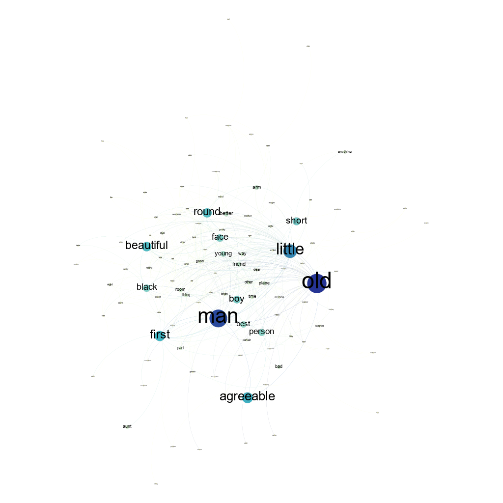

Network II

Colour Scale
Node Size Scale
min=10, max =150
The Network shown above is the Word Adjacency Network (WAN) of the frequently occuring common nouns and adjectives in the Charles Dickens' magnum opus, David Copperfield. It is a directed network consisting of 112 nodes and 426 directed edges.
Each node represents a word and is either a noun or an adjective. Adjective nodes (0.0 in the dataset) are coloured in pink and the common nouns (1.0 in the dataset) in green. I have utilized the Force Atlas 2 Layout with Prevent Overlap checked. The size of the nodes are linearly porportional to their degree.
The network below utilizes the Yifan Hu proportional layout and the node sizes are linearly dependent on eigen vector centrality. Node hue ranking (brightness of the node) is also based on the eigen vector centrality.
a) Do you find communities (modularity) in the graph?
Yes. There are 6 communities in the graph. Modularity was calculated as 0.294 (with and without resolution). Modularity is a measure that defines how likely the community structure found is created at random.
b) What is the average degree centrality? What is the implication for this network?
Degree centrality ranks nodes based on their number of connections. The higher the number of connections, the higher the degree centrality of that node. The Average Degree Centrality of the graph is 3.795.
In this network, the words 'little','other','old' and 'good' are the wods with the four maximum number of connections. Here ,we note that the top 20 words with high degree centrality are adjectives and 'child' is the common noun with the highest degree centrality among the common nouns. Since adjectives can be used with a number of proper and common nouns, it is natural that adjectives have high degree centrality.
c) What is the average betweenness centrality? What is the implication for this network?
Betweenness Centrality of a node measures how important it is in connecting other nodes i.e., it is the total number of shortest paths between other nodes in network which pass through the current node. The average Path length of this network is 2.5985937022317334 and the average betweenness centrality is 46.68750003
In this network, the words 'little', 'other', 'good' and 'new' are the 4 words which have the four maximum number of shortest paths passing through them. In betweenness centrality as well the top words are all adjectives as they are more widely used as such have more connections, which help them feature in the shortest paths to many nodes. Common nouns cannot be each others neighbours but adjectives can.
d) What is the average Eigenvector centrality? What is the implication for this network?
Eigenvector centrality of a node tries to generalize degree centrality by incorporating the importance of its neighboring nodes. The average eigen vector centrality is 0.08853825
In this network, the words 'old', 'man', 'little' and 'agreeable' are the 4 words with maximum number of important neighbours. Here we find the first common noun (man) which features among the top 4 of all the measures seen so far. Man is a word which can take a large variety of adjectives more than many other common nouns found in the english language
Colour Scale
Node Size Scale
min=10, max =150
Dataset Citation:
1. E. J. Newman, Phys. Rev. E 74, 036104 (2006).